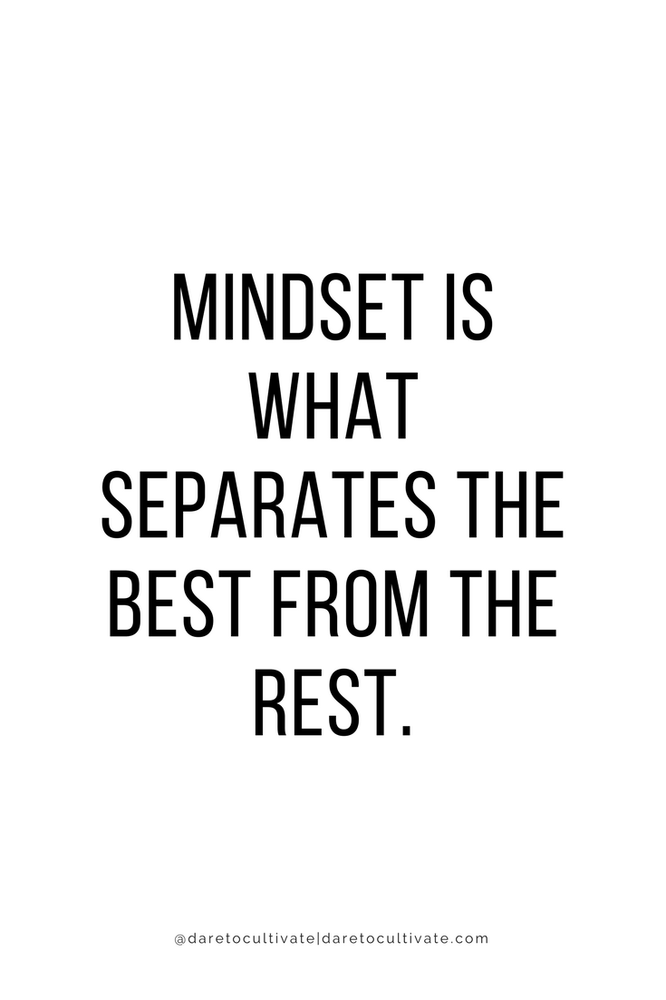

Hoe blijf ik gemotiveerd?
Wat mij motiveert is dat je nooit uitgeleerd bent. Er zijn altijd wel problemen die je tegenkomt, en er zijn altijd wel creatieve oplossingen te vinden op zo’n probleem. Je leert letterlijk van de problemen die je tegenkomt. Het gaat nooit exact zoals je wilt, en het vinden van een oplossing daarop, geeft een goed gevoel. De combinatie van technisch inzicht en creativiteit trekt mij enorm, en maakt mijn ‘honger’ naar kennis en informatie steeds groter.